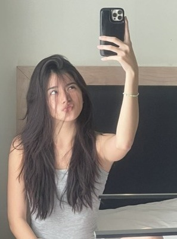
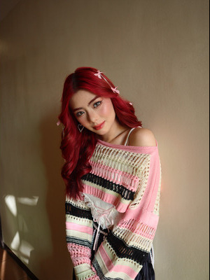

BiniVerse
ABOUT
Bini is a Filipino girl group formed in 2019 through ABS-CBN's Star Hunt Academy (SHA).
group is composed of eight members: Aiah, Colet, Maloi, Gwen, Stacey, Mikha, Jhoanna, and Sheena.
Bini debuted on June 11, 2021, with their single, "Born to Win", after three years of training under SHA.
Before their debut, the group released a pre-debut single, "Da Coconut Nut", on November 20, 2020.
The group has since then gained wide recognition and has been dubbed as the "Nation's Girl Group" due to its
significant impact on the public and Philippine pop music. They became the first Filipino pop group with the most
monthly listeners on Spotify, and the first to top Billboard's Philippine Songs chart. They are also the first to
receive the Billboard Philippines Women in Music "Rising Star" Award.
MEMBERS

BINI AIAH
BINI COLET
BINI MALOI

BINI GWEN

BINI STACEY

BINI MIKHA
BINI JHOANNA